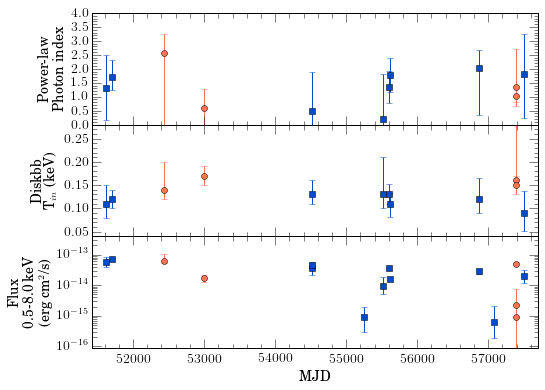

RZ 2109
RZ 2109 is an ultraluminous black hole in a globular cluster located near NGC 4472. We have new and archival data in both optical and x-ray, going back to the year 2000. Previous work indicates it is likely to be an ultra compact x-ray binary; the presence of the completely forbidden [OIII] transition line in the optical points towards the binary companion being a white dwarf. We hope that long-term optical and x-ray monitoring of this unique object will help shed light on the nature of the source. This is a very exciting object to study! The combination of the strong [OIII] line and the strongly variable, ultraluminous x-ray luminosity make RZ 2109 very different from other known globular cluster x-ray sources.
RZ 2109 is unique in that it has flux variability that does not seem to correspond to any obvious change in the X-ray best fit parameters.

Image from https://arxiv.org/abs/1806.01848.